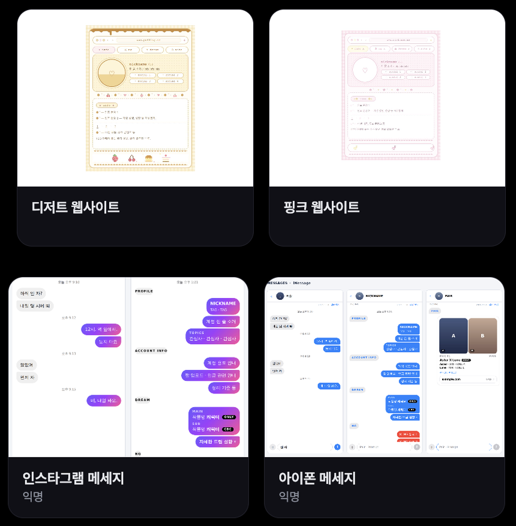

러브인포 · 페이지
템플릿
다른 분들이 나눠준 HTML 페이지 디자인을 둘러보고, 내 홈에 가져와 고쳐 쓰는 곳입니다. 내가 만든 페이지를 나눌 수도 있습니다.
들어가기
- 첫 화면 아래 TEMPLATES, 또는
luvinfo.me/templates. - 러브인포 홈이 있는 계정으로 로그인해야 볼 수 있습니다. 구글 로그인만 하고 홈이 없는 계정은 볼 수 없습니다.
- 한 화면에 12개씩, 검색칸에 제작자 핸들이나 이름 · 설명의 낱말을 넣어 찾습니다. 태그로 거르기, 「내가 올린 것」만 보기.

사진 자리img/li-templates.png가져오기
- 내 홈에 추가
- 카드를 눌러 미리보기를 본 뒤 「내 홈에 추가」. 내 홈에 새 HTML 페이지로 들어가고, 거기서 글 · 사진을 내 것으로 바꿔 ✓ 저장합니다.
- HTML 파일로 받기
- 코드를 파일로 받아 직접 고칠 때.
- 사용 범위
- 상세 창에 제작자가 정한 범위가 보입니다 — 「자유롭게 고쳐 써도 됩니다」 또는 「디자인은 그대로, 내용만 바꿔 써 주세요」. 뒤쪽이면 가져올 때 한 번 더 확인합니다.
- 만든 분 표시
- 제작자가 켜 두었으면 가져간 페이지 아래에 「template by @핸들」이 남습니다.
올리기
- 갤러리의 「＋ 템플릿 올리기」, 또는 HTML 페이지 편집 창의 「📤 템플릿으로 공유」.
- 이름 · 미리보기 이미지 · 설명 · 태그(기본 태그 + 직접 5개까지) · 페이지 폭 · 여백을 정하고 코드를 붙여넣거나 📄 파일을 불러옵니다.
- 올라갈 코드의 사진 주소와 @아이디는 자동으로 자리표시자로 바뀝니다. 이름 · 개인 문구 · 비밀번호 같은 건 올리기 전에 직접 지워 주세요.
- 내 핸들 표시
- 다 보이기(카드 · 상세 창 · 가져간 페이지) · 상세 창에서만 · 완전 익명(어디에도 안 보이고 가져간 페이지에도 표시 없음).
- 사용 범위
- 자유롭게 고쳐 써도 됩니다 / 디자인은 그대로, 내용만 바꿔 써 주세요.
- template by 표시
- 가져간 페이지 아래에 「template by @내핸들」을 남길지.